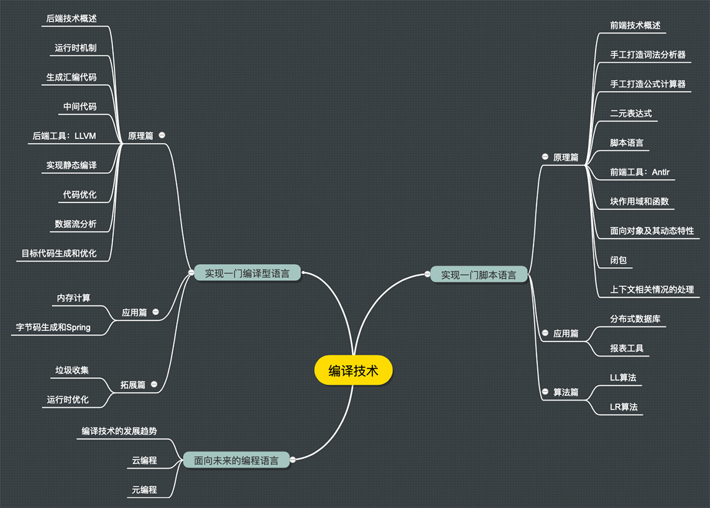

- 00 开篇词 为什么你要学习编译原理？.md
- 01 理解代码：编译器的前端技术.md
- 02 正则文法和有限自动机：纯手工打造词法分析器.md
- 03 语法分析（一）：纯手工打造公式计算器.md
- 04 语法分析（二）：解决二元表达式中的难点.md
- 05 语法分析（三）：实现一门简单的脚本语言.md
- 06 编译器前端工具（一）：用Antlr生成词法、语法分析器.md
- 07 编译器前端工具（二）：用Antlr重构脚本语言.md
- 08 作用域和生存期：实现块作用域和函数.md
- 09 面向对象：实现数据和方法的封装.md
- 10 闭包： 理解了原理，它就不反直觉了.md
- 11 语义分析（上）：如何建立一个完善的类型系统？.md
- 12 语义分析（下）：如何做上下文相关情况的处理？.md
- 13 继承和多态：面向对象运行期的动态特性.md
- 14 前端技术应用（一）：如何透明地支持数据库分库分表？.md
- 15 前端技术应用（二）：如何设计一个报表工具？.md
- 16 NFA和DFA：如何自己实现一个正则表达式工具？.md
- 17 First和Follow集合：用LL算法推演一个实例.md
- 18 移进和规约：用LR算法推演一个实例.md
- 19 案例总结与热点问题答疑：对于左递归的语法，为什么我的推导不是左递归的？.md
- 20 高效运行：编译器的后端技术.md
- 21 运行时机制：突破现象看本质，透过语法看运行时.md
- 22 生成汇编代码（一）：汇编语言其实不难学.md
- 23 生成汇编代码（二）：把脚本编译成可执行文件.md
- 24 中间代码：兼容不同的语言和硬件.md
- 25 后端技术的重用：LLVM不仅仅让你高效.md
- 26 生成IR：实现静态编译的语言.md
- 27 代码优化：为什么你的代码比他的更高效？.md
- 28 数据流分析：你写的程序，它更懂.md
- 29 目标代码的生成和优化（一）：如何适应各种硬件架构？.md
- 30 目标代码的生成和优化（二）：如何适应各种硬件架构？.md
- 31 内存计算：对海量数据做计算，到底可以有多快？.md
- 32 字节码生成：为什么Spring技术很强大？.md
- 33 垃圾收集：能否不停下整个世界？.md
- 34 运行时优化：即时编译的原理和作用.md
- 35 案例总结与热点问题答疑：后端部分真的比前端部分难吗？.md
- 36 当前技术的发展趋势以及其对编译技术的影响.md
- 37 云编程：云计算会如何改变编程模式？.md
- 38 元编程：一边写程序，一边写语言.md
- 加餐 汇编代码编程与栈帧管理.md
- 用户故事 因为热爱，所以坚持.md
- 第二季回归 这次，我们一起实战解析真实世界的编译器.md
- 结束语 用程序语言，推动这个世界的演化.md
00 开篇词 为什么你要学习编译原理？
你好，我是宫文学，一名技术创业者。我曾经参与过几个公司的创业过程，在开源技术社区也做过一些工作，现在是北京物演科技CEO。
我喜欢做平台性的软件，而编译技术就是产品取得优势的关键。我是国内最早一拨做BPM的，也就是流程管理平台，也是最早一拨做BI平台的，现在流行叫大数据。当时我们只有3个人，用编译技术做了一些硬核的产品原型，跟联想集团签订了战略级合作协议。之后我又做过电子表单和快速开发平台，而它们的核心就是编译技术。
我参与的第一个公司卖给了上市公司，第二个在新三板上市，这些成果在一定程度上受益于编译技术。而我呢，对编译技术一直很重视，也一直保持着兴趣。所以很高兴能在“极客时间”上分享与编译技术有关的原理和经验，希望我的分享能帮助你在编译技术这个领域获得实实在在的进步。
众所周知，编译技术是计算机科学皇冠上的明珠之一。历史上各门计算机语言的发明人，总是被当作英雄膜拜。比尔·盖茨早期最主要的成就，就是写了一个Basic的解释器。当年Brendan Eich设计的JavaScript，虽然语言略微有点儿糙，但却顽强地生存到了现在。
很多国外厂商的软件，普遍都具备二次编程能力，比如Office、CAD、GIS、Mathematica等等。德国SAP公司的企业应用软件也是用自己的业务级语言编写的。目前来看，谷歌也好，苹果也好，微软也好，这些技术巨头们的核心能力，都是拥有自己的语言和生态。可见编译技术有多么重要！
编译技术，与你的工作息息相关
但也有一些程序员认为：“我不可能自己去写一门新的语言，还有必要学习编译原理吗？”
这种想法是把编译原理的用途简单化了。编译原理不是只能用于炫耀的屠龙技。 别的不说，作为程序员，在实际工作中你经常会碰到需要编译技术的场景。
Java程序员想必很熟悉Hibernate和Spring，前者用到了编译技术做HQL的解析，后者对注解的支持和字节码动态生成也属于编译技术。所以，如果你要深入理解和用好这类工具，甚至想写这种类型的工具，会需要编译技术。
而PHP程序员在写程序的时候，一般会用到模板引擎实现界面设计与代码的分离。模板引擎对模板进行编译，形成可执行的PHP代码。模板引擎可以很强大，支持条件分支、循环等语法。如果你了解编译技术，会更容易掌握这些模板引擎，甚至写出更符合领域需求的模板引擎。
我们2001年开发了一款工作流软件，里面有依据自定义公式判断流转方向的功能。像这类需要用户自定义功能的软件，比如报表软件、工资管理软件等，都需要编译技术。
如果你要参与编写一个基础设施类的软件，比如数据库软件、ETL软件、大数据平台等，很多需要采用编译技术提供软件自带的语言功能，比如SQL。这种功能无法由外部通用语言实现。
除此之外，解析用户输入，防止代码注入，为前端工程师提供像React那样的DSL，像TypeScript那样把一门语言翻译成另一门语言，像CMake和Maven那样通过配置文件来灵活工作，以及运维工程师分析日志文件等等高级别的需求，都要用到编译技术。
除了丰富的应用场景，学习编译技术对于提升程序员的竞争力也很重要。现在一些大公司在招聘程序员时，有难度的面试题都是涉及底层机制的。因为理解了底层机制，才能有更深入思考问题，以及深层次解决问题的能力，而不是只能盲目地搜索答案，从表面解决问题。而学习编译原理能让你从前端的语法维度、代码优化的维度、与硬件结合的维度几个方面，加深对计算机技术的理解，提升自己的竞争力。
所以，无论你是前端工程师、后端工程师，还是运维工程师，不论你是初级工程师还是职场老手，编译技术都能给你帮助，甚至让你提升一个级别。
编译技术并不难学
但问题来了，你可能会说：“我知道编译技术很重要，我也很想把它啃下，可是我每次鼓起勇气拿起《编译原理》，啃不了多少页就放下了。编译原理已经成了我的心魔……”
在我看来，你之所以遇到困难，很大一个原因在于市面上讲述编译原理的内容往往过于抽象和理论化。学习，说到底是一个学和练，以及学以致用的过程。所以在和朋友们沟通了解之后，我想用下面的思路组织课程内容，帮你克服畏难情绪，更好地理解和学习编译原理。
我会通过具体的案例带你理解抽象的原理。比如语义分析阶段有个I属性和S属性，传统课本里只专注I属性和S属性的特点和计算过程，很抽象。那么我会分析常用语言做语义分析时，哪些属性是I属性，哪些是S属性，以及如何进一步运用这些属性，来让你更直观地了解它们。
我也会重视过程，带你一步步趟过雷区。我写了示例程序，带你逐渐迭代出一门脚本语言和一门编译型语言。当然了，我们会遇到一些挑战和问题，而在解决问题的过程中，你会切切实实体会到某个技术在哪个环节会发挥什么作用。最重要的是，你会因此逐渐战胜畏难情绪，不再担心看不懂、学不会。
我还会让你在工作中真正运用到编译技术。课程里的代码，可以给你的工作提供参考。我介绍的Antlr和LLVM工具，前者能帮你做编译器前端的工作，后者能帮你完成编译器后端的工作。在课程中，你能真正运用编译技术解决报表设计等实际问题。
为了帮你迅速了解课程的知识结构体系，我画了一张思维导图。课程从三方面展开，包括实现一门脚本语言、实现一门编译型语言和面向未来的编程语言。

课程的第一部分主要聚焦编译器前端技术，也就是通常说的词法分析、语法分析和语义分析。我会带你了解它们的原理，实现一门脚本语言。我也会教你用工具提升编译工作的效率，还会在几个应用场景中检验我们的学习成果。
第二部分主要聚焦编译器后端技术，也就是如何生成目标代码和对代码进行优化的过程。我会带你纯手工生成汇编代码，然后引入中间代码和后端工具LLVM，最后生成可执行的文件能支持即时编译，并经过了多层优化。
第三部分是对编译技术发展趋势的一些分析。这些分析会帮助你更好地把握未来技术发展的脉搏。比如人工智能与编译技术结合是否会出现人工智能编程？云计算与编译技术结合是否会催生云编程的新模式？等等。
写在后面
课程虽然只有30多节，但每节课绝对是干货满满。我希望这个课程能让所有有志于提升自己技术的工程师，顺利攻下编译技术这重要的一关，能够在工作中应用它见到实效，并且对编程理解更上一层。
最后，我希望你在留言区立下Flag，写下自己的计划，在“极客时间”与志同道合的朋友互相监督，一起学习，一起进步！
© 2019 - 2023 Liangliang Lee. Powered by gin and hexo-theme-book.